Автобусы российского производства являются доступным по цене решением для многих покупателей. Они составляют неплохую конкуренцию зарубежным аналогам. Импортные модели превосходят российские
разработки по техническим характеристикам и оснащению, но стоимость делает их приобретение невозможным для некоторых категорий клиентов. Поэтому многие физические и юридические лица предпочитают
останавливать свой выбор на отечественных предложениях.
Машины российского производства обладают отличными качественными характеристиками, соответствуют всем актуальным требованиям и стандартам, надежность и безопасность обеспечивается агрегатами и
механизмами, произведенными зарубежными компаниями.
Главным преимуществом российских автобусов является их адаптация к климатическим и дорожным условиям. Данным достоинством могут похвастаться разве что китайские модели.
На сегодняшний день российские предприятие постоянно работают над качеством и дизайном собственной продукции, усовершенствую модели прошлых лет и выпуская новые модификации. Ориентированность
на клиента, расширение модельного ряда, предоставление широкого спектра автобусов, доступность и легкость приобретения запчастей и комплектующих — все эти факторы способствуют популярности
российских автобусов на внутреннем рынке.
Самые популярные модели автобусов в России
1. НефАЗ-5299
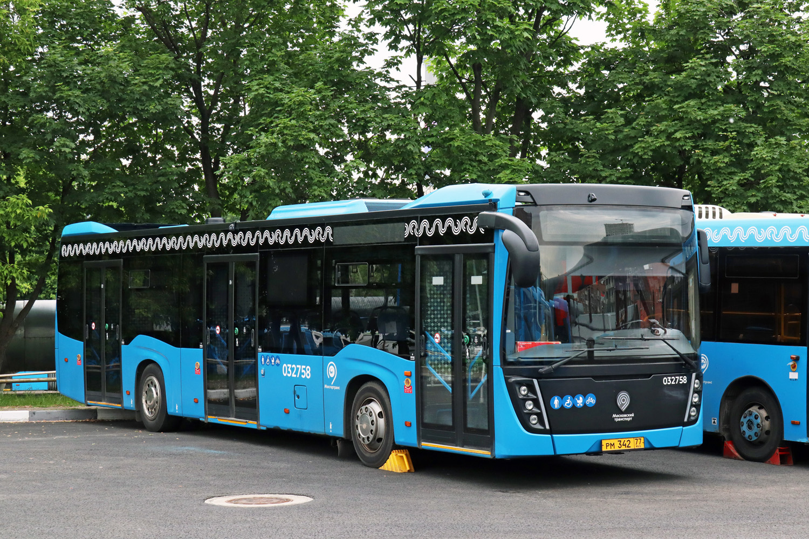
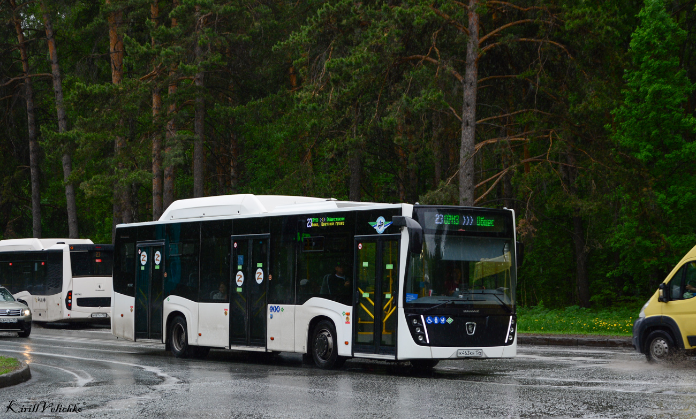
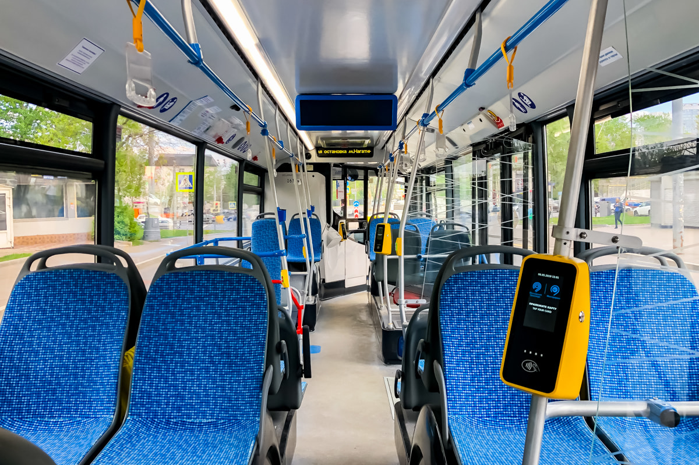
Семейство российских автобусов большого класса производства Нефтекамского автомобильного завода. Выпускается в высокопольном, частично-низкопольном, полностью низкопольном вариантах городского
, пригородного и междугородного автобуса с дизельным и газовым двигателями, а также в виде троллейбуса и электробуса; претерпел три значительных рестайлинга дизайна. Является одной из самых
массовых моделей городского автобуса в современной России: за 15 лет производства было выпущено более 10 000 экземпляров.
×
Регион/Город
Количество
Модификация
Москва
2122
НефАЗ-5299-40-52 (5299JP)
Санкт-Петербург
403
НефАЗ-5299-40-57 (LNG)
Татарстан
190
НефАЗ-5299-40-57 (CNG)
2. ЛиАЗ-6213
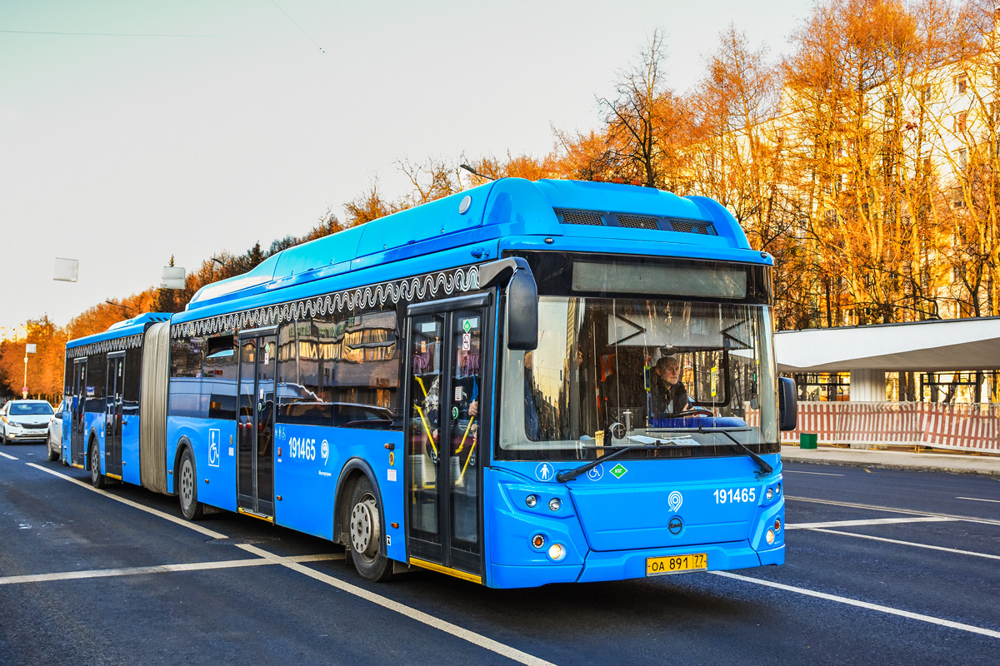
ЛиАЗ-6213 в Москве
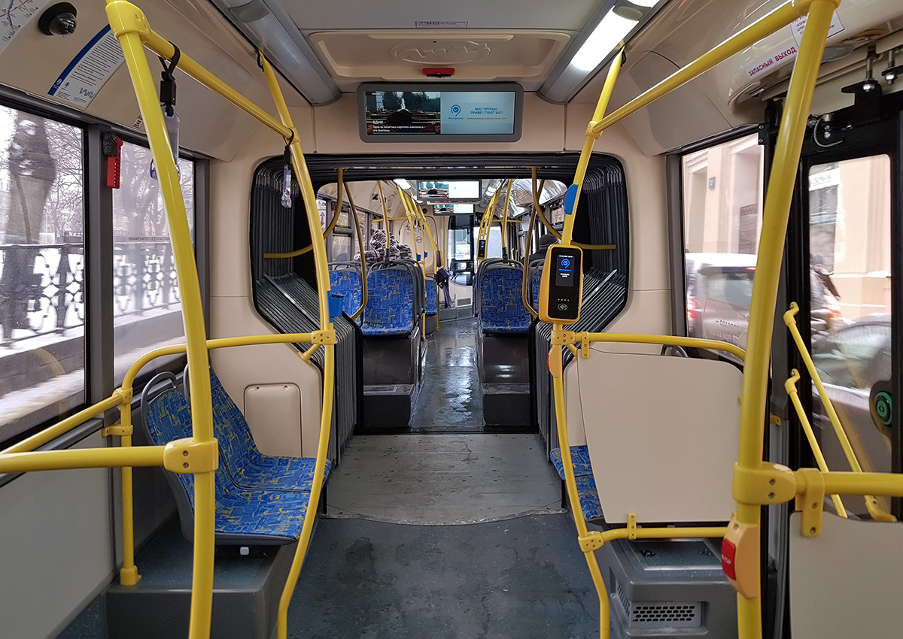
ЛиАЗ-6213. Салон
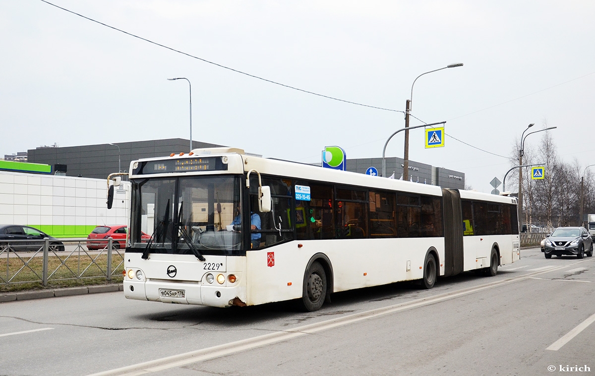
ЛиАЗ-6213 в Санкт-Петербурге
Первый отечественный низкопольный сочлененный автобус. Благодаря низкому уровню пола, просторному и современному салону, удобным
накопительным площадкам, большой пассажировместимости (153 человека), автобус незаменим на маршрутах с интенсивным пассажиропотоком,
присущим крупным мегаполисам.
Проведен рестайлинг модели — применены новые передние и задние маски, установлена новая головная оптика, современное оформление салона и
рабочего места водителя.
При установке газового двигателя, 9 газовых баллонов располагаются на крыше автобуса.
Автобус ЛиАЗ 6213 был признан «Лучшим автобусом по стоимости владения» по мнению независимых экспертов ОАО «АСМ — Холдинг» и журнала «За
рулем».
×
Регион/Город
Количество
Модификация
Москва
1724
ЛиАЗ-6213.65
Санкт-Петербург
166
ЛиАЗ-6213.20
Тюменская область
69
ЛиАЗ-6213.65
3. Volgabus 5270 / Волжанин "СитиРитм"
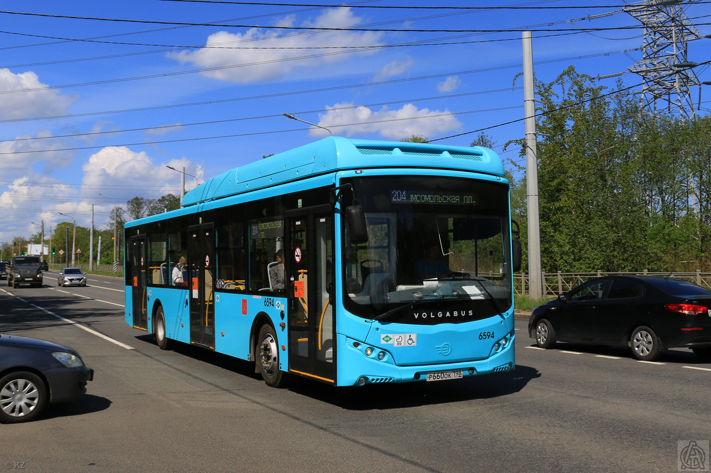
Автобус в Санкт-Петербурге
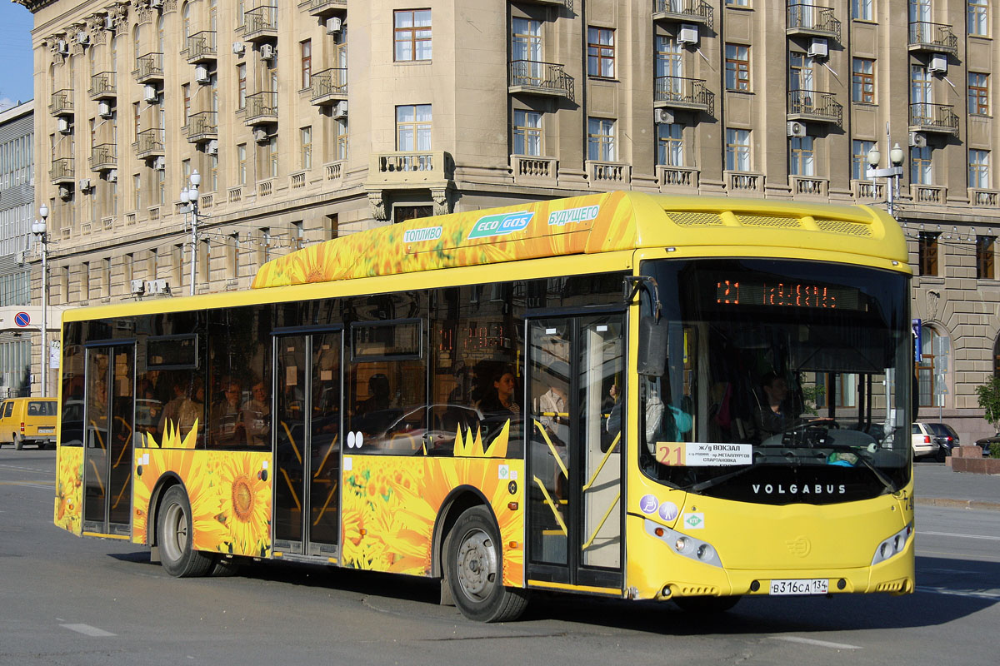
Автобус в Волгоградской области
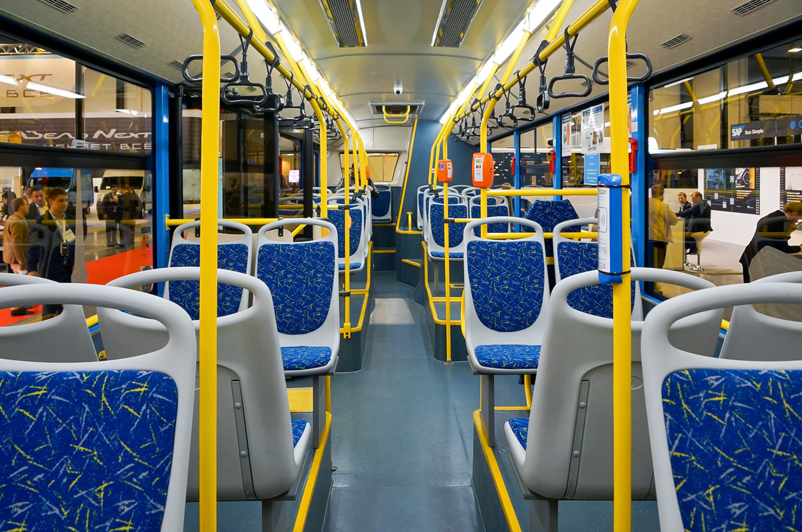
Салон автобуса
Городской низкопольный автобус «ВОЛГАБАС-5270-0000010» большой вместимости с низким уровнем пола. (Городской низкопольный автобус Волжанин-527006 CR-12 СитиРитм 12. Серия «Ситиритм»)
Низкопольный автобус «ВОЛГАБАС-5270-0000010» (СитиРитм 12 Волжанин-527006 CR-12) с кузовом из алюминиевого сплава. Создан для работы на регулярных маршрутах в крупных городах.
Отсутствие ступеней при входе, ровный пол на всем протяжении салона и система наклона кузова (книлинг) обеспечивают быструю и легкую посадку / высадку пассажиров.
Эргономичный салон с комфортабельными сиденьями и широкими проходами, тонированные стекла с ультрафиолетовой защитой, системы вентиляции и отопления делают комфортной поездку в любое время
года.
Бортовой компьютер, CAN-система передачи данных и электронная тормозная система EBS позволяют минимизировать риски ошибок за рулем и ускоряют диагностику автобуса.
Автобус производится на базе шасси собственного производства с надежными немецкими компонентами.
 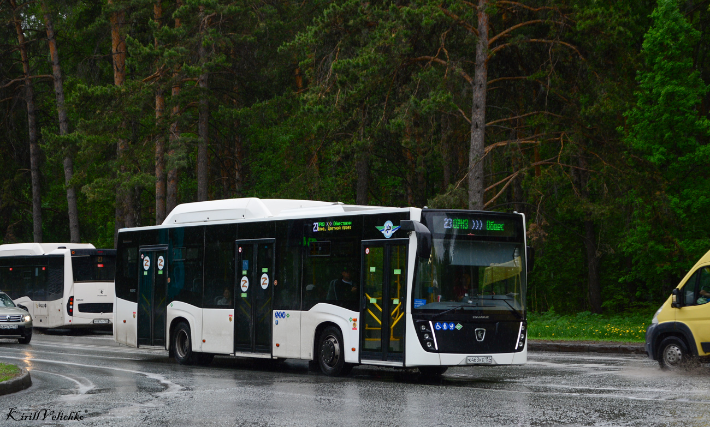
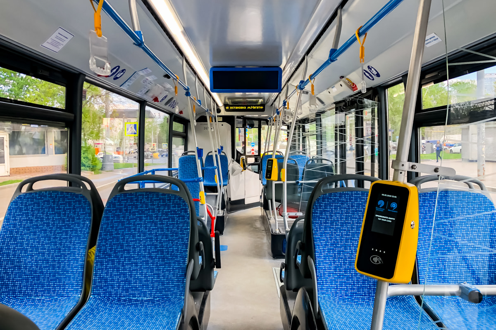
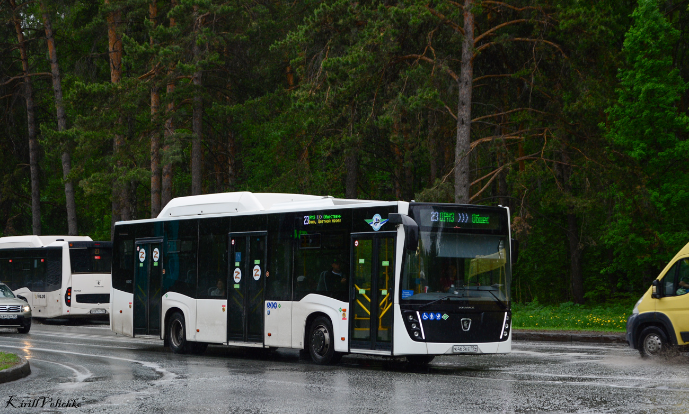
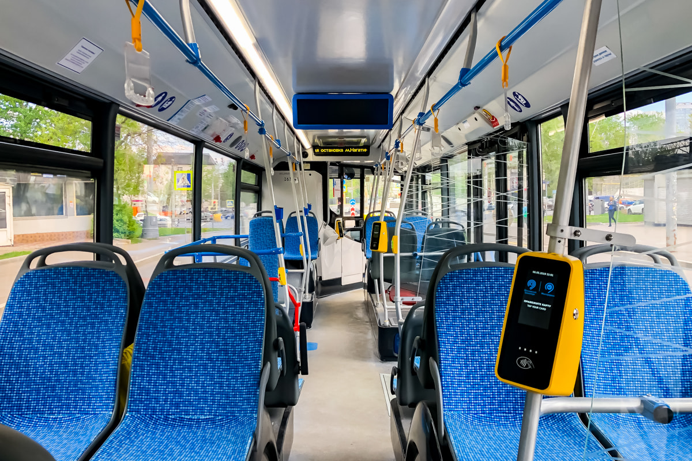